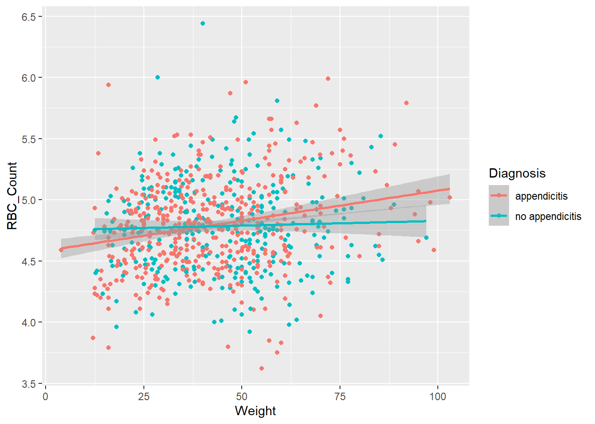
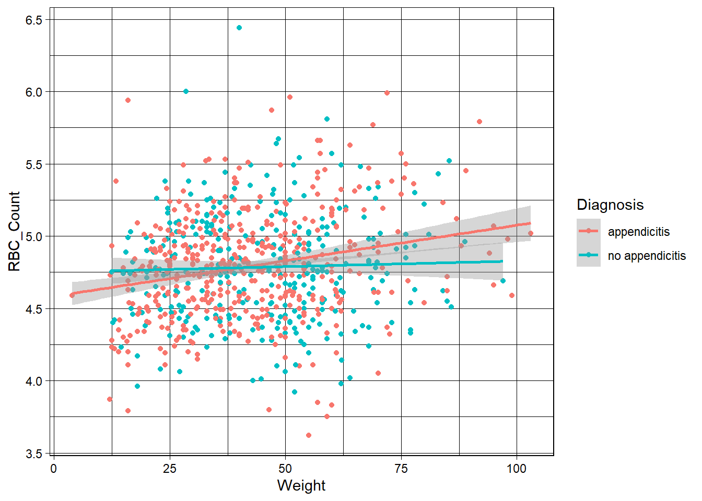
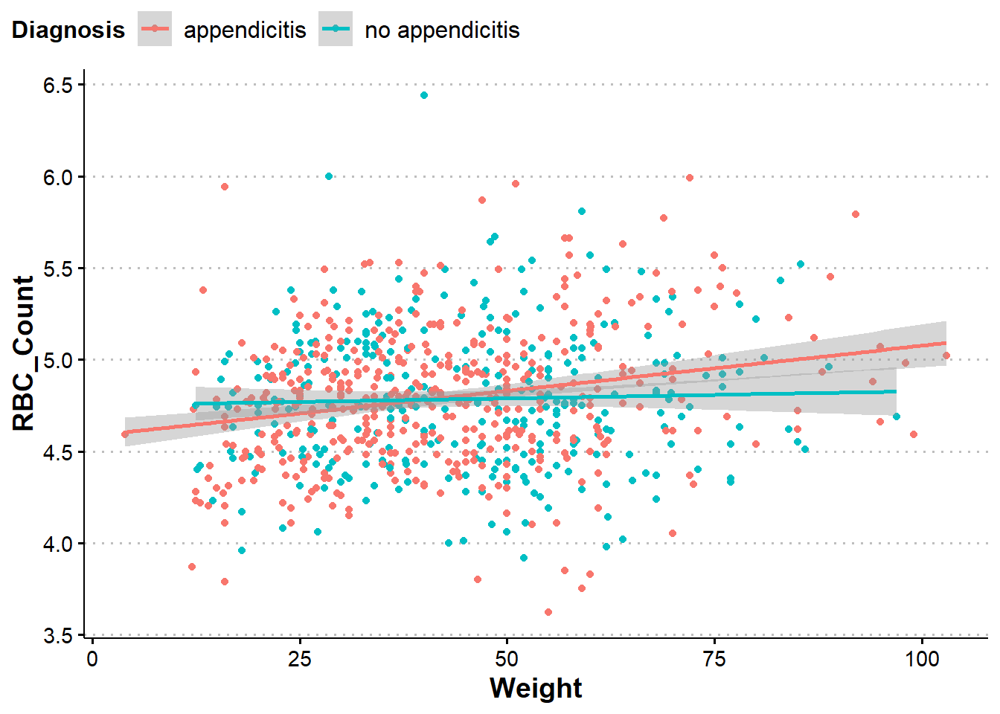
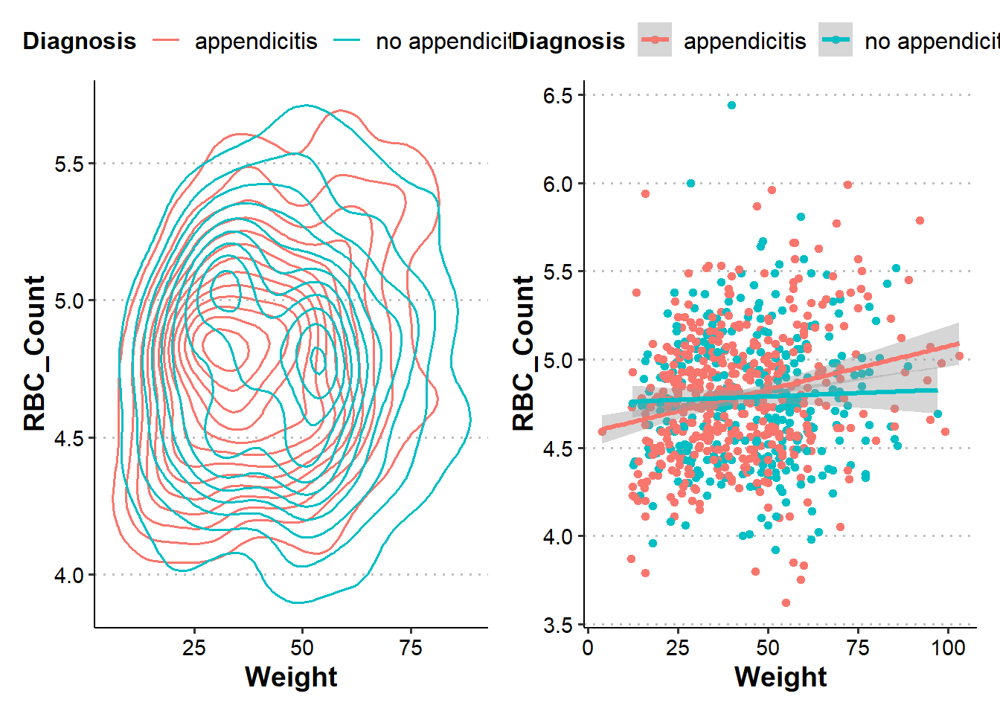
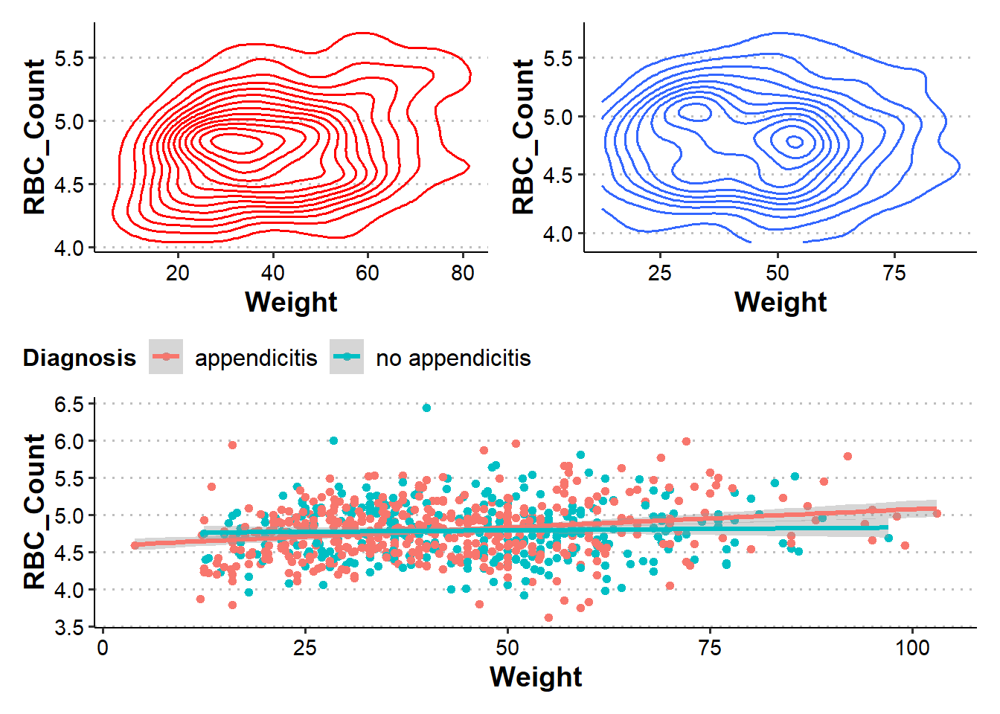

library(tidyverse)
library(readxl)
app_data <- read_excel("data/app_data.xlsx", sheet = 1)
app_data <- app_data |>
mutate(BMI = as.numeric(BMI),
US_Number = as.character(US_Number),
SexF = factor(Sex, levels = c("female", "male"), labels = c("Female", "Male")),
DiagnosisF = as.factor(Diagnosis),
SeverityF = as.factor(Severity))Numeric Variable Graphs
The video below discusses how to create graphs for numeric variables using ggplot2.
I highly recommend watching the video using the ‘full’ Panopto player. There is a ‘pop out’ button in the bottom right of the video to enter this viewer.
Notes
ggplot Themes
The style of the graphs created by ggplot() are extremely easy to create and apply! These can help all of your plots have the same feel in a presentation.
Let’s consider a basic plot from the notes above to start. First let’s reread the data:
Consider the graph we created with multiple trend lines:
g <- ggplot(app_data |>
drop_na(RBC_Count, Weight, Diagnosis) |>
filter(RBC_Count < 8),
aes(x = Weight, y = RBC_Count, color = Diagnosis))
g_scatter <- g + geom_point() +
geom_smooth(method = lm)
g_scatter`geom_smooth()` using formula = 'y ~ x'
This uses the default theme from ggplot2. While this looks pretty good, we can easily change this using a standard theme.
g_scatter +
theme_linedraw()`geom_smooth()` using formula = 'y ~ x'
You can see these just changes the look of the plot a bit. With themes, you can easily change the look of multiple plots with out changing much code.
In fact, you can define your own custom theme very easily. For instance, below we create a theme ‘object’ called t (theme courtesy of a former student, John Hinic) which modifies a theme from the ggthemes package (this package must be installed to run this code!).
t <- ggthemes::theme_clean() +
theme(plot.background = element_rect(color = NA),
axis.title = element_text(size = 14, face = "bold"),
axis.text = element_text(size = 11),
legend.background = element_rect(color = NA),
legend.position = 'top',
legend.justification.top = 'left',
legend.location = 'plot',
legend.text = element_text(size = 12),
legend.margin = margin(0, 0, 0, 0),
plot.title.position = 'plot',
strip.text = element_text(size = 14, face = "bold"))Warning: The `size` argument of `element_line()` is deprecated as of ggplot2 3.4.0.
ℹ Please use the `linewidth` argument instead.
ℹ The deprecated feature was likely used in the ggthemes package.
Please report the issue at <https://github.com/jrnold/ggthemes/issues>.Now we can apply this theme using the usual + syntax from ggplot2.
g_scatter + t`geom_smooth()` using formula = 'y ~ x'
patchwork Package
We saw that we can use facet_wrap() and facet_grid() to make plots laid out in a pretty nice way. However, this generally is done using the same type of plot across a categorical variable. Sometimes we want to put different plot types next to each other.
The patchwork package (likely must be installed to use) is a great package for putting ggplots next to each other in useful ways! We can simply use + to separate plot objects we want next to each other.
library(patchwork)
g_scatter_custom <- g_scatter + t
g_density <- g +
geom_density_2d() +
t
g_density + g_scatter_custom`geom_smooth()` using formula = 'y ~ x'
We can also place a plot below others if we want using (objects...)/(objects).
g2 <- ggplot(app_data |>
drop_na(RBC_Count, Weight, Diagnosis) |>
filter(RBC_Count < 8, Diagnosis == "appendicitis"),
aes(x = Weight, y = RBC_Count))
g_density_append <- g2 +
geom_density_2d(color = "red") +
t
g3 <- ggplot(app_data |>
drop_na(RBC_Count, Weight, Diagnosis) |>
filter(RBC_Count < 8, Diagnosis == "no appendicitis"),
aes(x = Weight, y = RBC_Count))
g_density_noappend <- g3 +
geom_density_2d() +
t
(g_density_append + g_density_noappend)/g_scatter_custom`geom_smooth()` using formula = 'y ~ x'
A super handy package!
Use the table of contents on the left or the arrows at the bottom of this page to navigate to the next learning material!